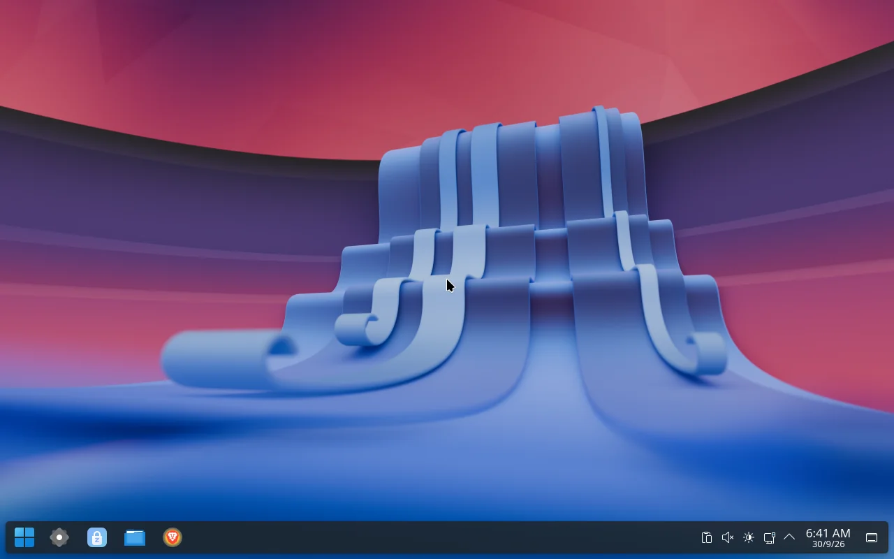
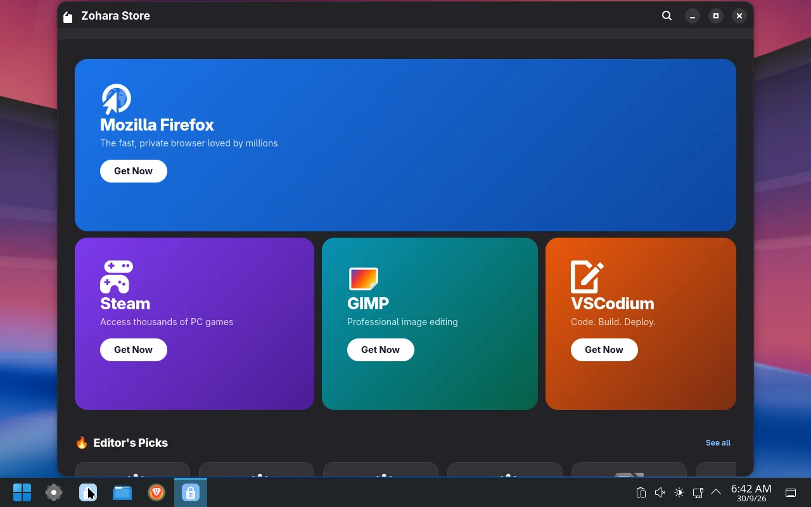
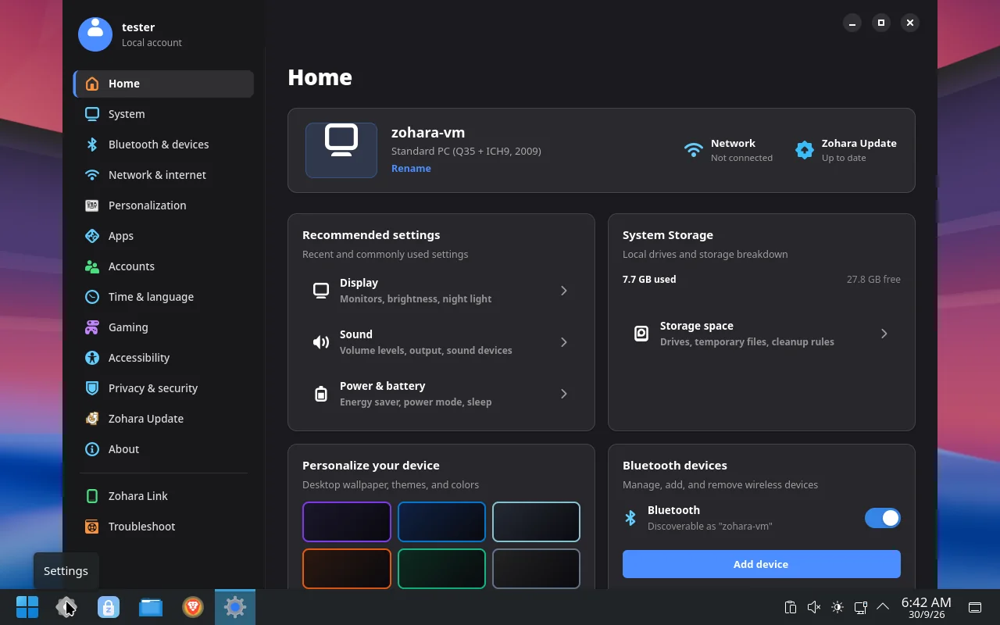
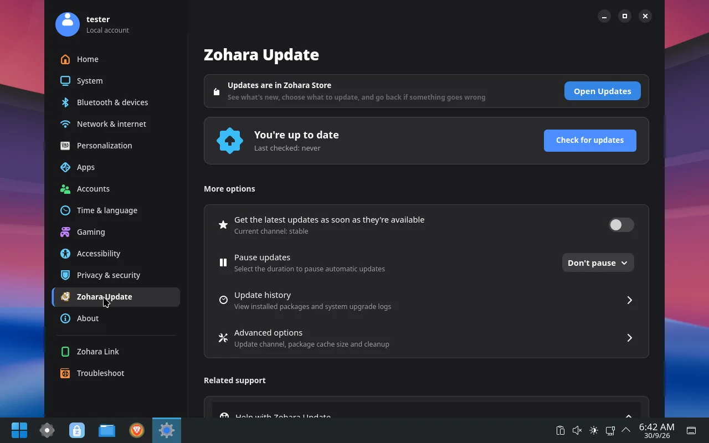
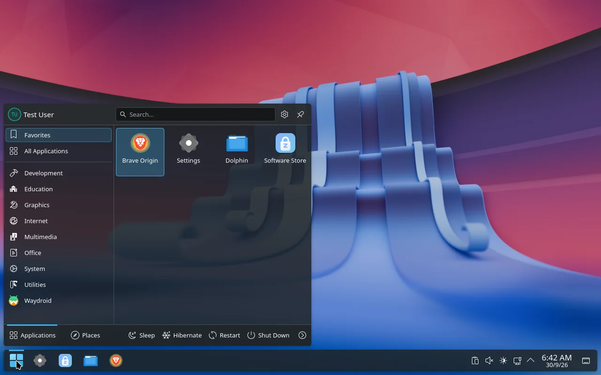
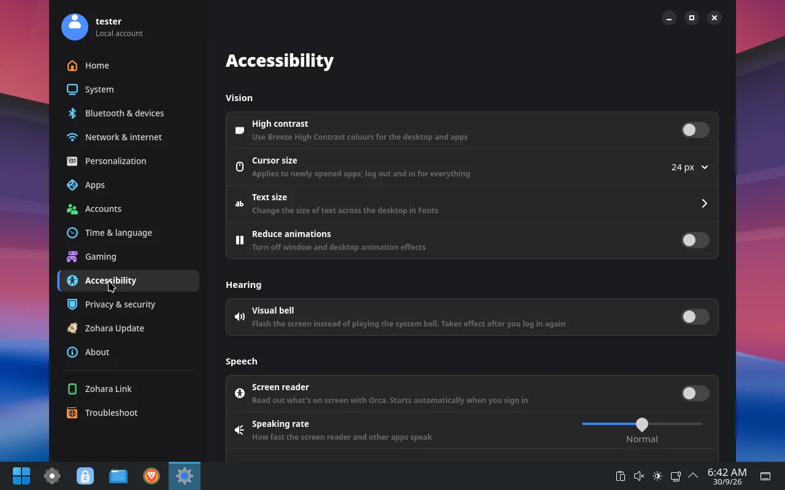

A desktop you already know
A taskbar with a Start button, a Start menu with search and Favorites, and a Windows-flavoured look on top of KDE Plasma. Nothing to relearn on day one.
Arch-based Linux · KDE Plasma
Zohara OS gives you a desktop you already know how to use: a familiar taskbar and Start menu, a Settings app laid out like Windows 11, a software store, and voice typing that runs entirely on your own computer.
Free and open source. x86_64 PCs. Still being finished; see status.

Linux is powerful, but it usually asks you to learn a new way of doing everything. Zohara keeps the parts you know and puts a button on the parts that used to need a terminal.
A taskbar with a Start button, a Start menu with search and Favorites, and a Windows-flavoured look on top of KDE Plasma. Nothing to relearn on day one.
A custom Settings app in the Windows 11 layout: display, sound, Bluetooth, network, storage, accounts, default apps, gaming and printers. Each page controls the actual system, not a mock-up.
Press Meta + H, speak, and the words are typed where your cursor is. Recognition runs on your computer with whisper.cpp and a multilingual model that ships in the ISO. Nothing is uploaded.
Zohara Store installs apps and handles updates. It shows what is changing, lets you choose what to update, and offers a way back if an update goes wrong.
On Btrfs, a snapshot is taken before and after every package change, so there is something to go back to. Updates follow a date that the project approves, not the raw Arch stream.
If the installer fails, one button on the Welcome screen saves a report to a USB stick. In the installed system, Settings keeps a log and offers one-click fixes on the Troubleshoot page.
Click any picture to see it full size. These are from a test build running in a virtual machine.





The ISO is about 3.9 GB, which is more than GitHub allows for a release file. So tagged versions are listed on the Releases page, and a fresh ISO is also built automatically every time the project changes.
zohara-os-x86_64 file. It is a zip that contains the .iso.dd.Go to Releases Latest ISO build
A direct download link that doesn't need a GitHub account is planned. Build files are kept for 30 days.
| Processor | 64-bit x86 (Intel or AMD). Older CPUs work; voice typing is slower on them. |
|---|---|
| Memory | 4 GB RAM |
| Storage | 20 GB free |
| Firmware | UEFI or legacy BIOS |
| Graphics | Intel, AMD, or a modern NVIDIA card |
Zohara OS is created and maintained by Zohaib Baig (@Zohaib8090). It is dual-licensed under MIT and GPL-3.0-or-later, and third-party software keeps its own licenses.
Issues, ideas and pull requests are welcome on GitHub.